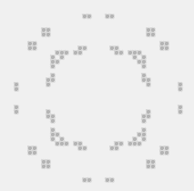

Game Of Live in Clojure with Quil
Posted onThis is my attempt to implement Conway’s Game of Life in Clojure using Quil library.
Game of Life
 There is an infinite grid of cells that can be alive or dead. For each iteration state of the grid is recalculated using several rules:
- Alive cell with 2 or 3 alive neighbors will live, in other cases it will die.
- A dead cell will become alive only if it has 3 alive neighbors.
Such simple rules create a lot of interesting and complex patterns. For example, oscillator - a pattern that evolves in itself after number of iterations.
Quil
Quil is a Clojure wrapper around Processing. Dynamic nature of Clojure and simple Processing API for graphics gives ability to quickly prototype algorithmic graphics. Checkout Quil LightTable tutorial and try their dynamic workflow.
Basic Quil application with funcional mode consists of 3 main functions: setup, update and draw. Each function works with the state - a map of everything you need on the scene. Instead of updating global variables for each frame, Quil gives us an API to deal with program state in a functional way.
Setup
is called once before the first frame. The main goal is to setup Quil scene and create a state map.
(defn setup []
(q/frame-rate 10)
(q/color-mode :hsb)
; initial state
{:life #{[24 8] [37 8] [17 9]}
:cell-size 5})Here :life is a set of all alive cells. Usually, developers implement grid by a twodimensional matrix. I’ve found working with the set just more comfortable for infinitely large grid.
Update
is a function that transforms the state for every frame.
(defn update [state]
(let [life (:life state)
candidates (set (mapcat square life))
next-life (set (filter #(will-live? life %) candidates))]
(assoc state :life next-life)))First it creates candidates - the set of all alive cells and their empty neighbors. Only those cells can be alive in the next iteration. Next it creates next-life set from candidates that will survive this iteration.
(defn square [[x y]]
"Gets a 3x3 square of points with a center at point [x y]"
(for [dx [-1 0 1]
dy [-1 0 1]]
[(+ x dx) (+ y dy)]))
(defn alive-neighbors [life point]
"Counts alive neighbors for point [x y]"
(->> (neighbors point)
(filter #(contains? life %)) ; alive neighbors
count))
(defn will-live? [life point]
"Checks whether point will live for current life state"
(let [n (alive-neighbors life point)]
(or (= n 3) (and (= n 2) (contains? life point)))))Draw
function takes a state and draws a frame.
(defn draw [state]
(q/background 240) ; background color
(q/stroke 220) ; cell border color
(q/fill 180) ; cell body color
(doseq [[x y] (:life state)
:let [w (:cell-size state)]]
(q/rect (* w x) (* w y) w w 2)))It is simple like that. Just clears scene and draws a square for every alive cell.
TL;TR
The whole project with instructions how to run it is available on github. Fill free to play with it.
Have a nice hack ;)